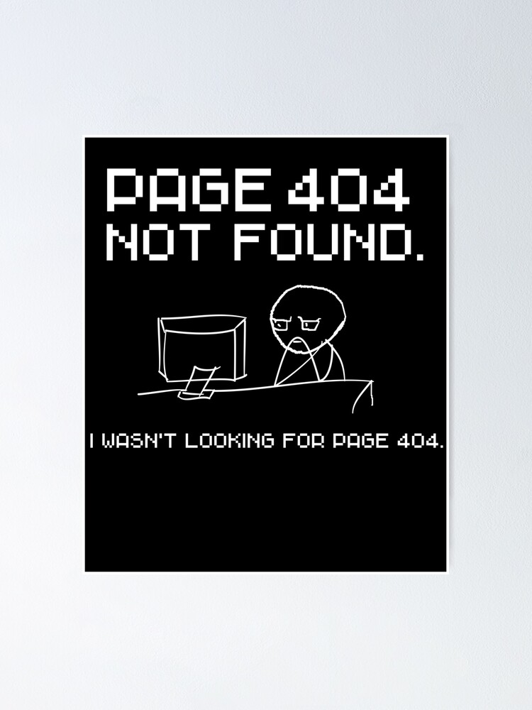

<div class="flex items-center justify-center h-screen">
  <div class="px-4 lg:py-12">
    <div class="lg:gap-4 lg:flex">
      <div class="flex flex-col items-center justify-center  lg:py-32">
        <h1 class="font-bold text-primary text-9xl">404</h1>
        <p
          class="mb-2 text-2xl font-bold text-center text-gray-800 md:text-3xl"
        >
          <span class="text-secondary">Oops!</span> Pagina niet gevonden
        </p>
        <p class="mb-8 text-center text-gray-500 md:text-lg">
          De pagina die u zoekt bestaat niet.
        </p>
        <button class="btn btn-primary" routerLink="/home">
          Terug naar home!
        </button>
      </div>
        <div class="mt-4 flex justify-center" *ngIf="pickedPhoto >= 0.5">
          
        </div>
        <div class="mt-4 flex justify-center" *ngIf="pickedPhoto <= 0.5">
          
        </div>
    </div>
  </div>
</div>
